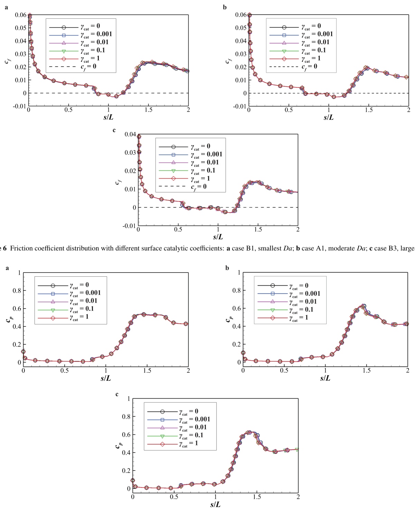
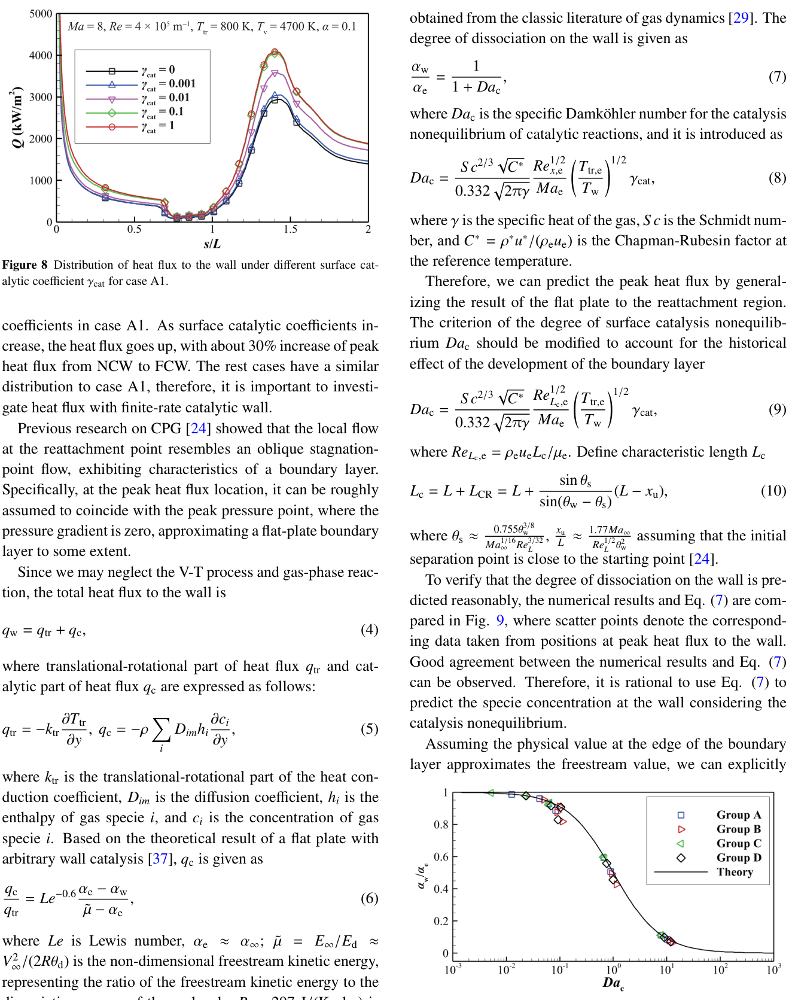
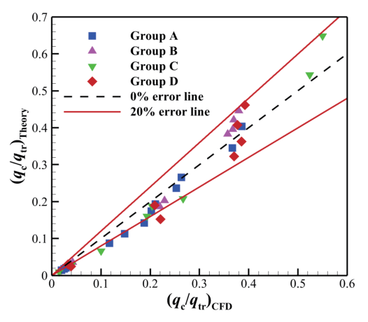
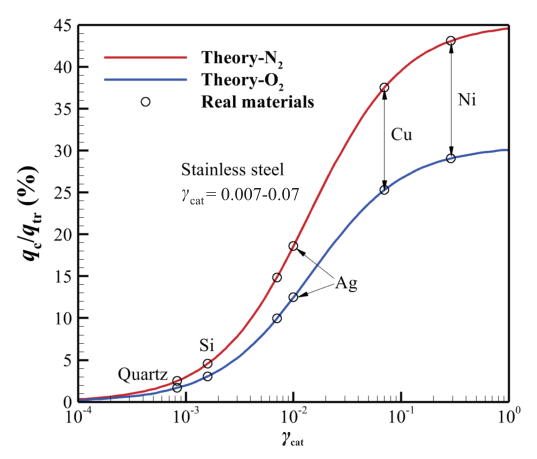

01中文摘要
本文结合理论分析和 CFD 研究高超声速层流压缩拐角流动，考察任意壁面催化对峰值热流的影响。计算覆盖马赫数 8–12、单位雷诺数 2×10^5–8×10^5 m⁻¹、来流离解度 0.05–0.15、斜坡角 20–28°。结果表明，壁面催化对流动结构影响很小，但显著提高再附区峰值热流。作者提出有限速率催化壁的无量纲催化热流预测公式，CFD 显示峰值热流随催化系数增大而升高；公式进一步用氧气来流验证，并用于评估真实材料催化系数下的峰值催化热流比，发现铜在相同名义来流下由氧气变为氮气时催化热流比可增大约 50%。
原始摘要（英文/原文）
Theoretical analysis and numerical simulations using computational fluid dynamics (CFD) were conducted to investigate hypersonic laminar flow over a compression corner, focusing on the effects of arbitrary surface catalysis on peak surface heat transfer. Four groups of inflow conditions were considered, varying in Mach number (8-12), unit Reynolds number (2 × 1058 × 105 m−1), degree of dissociation (0.05-0.15), and ramp angle (20◦-28◦). The results indicate that while wall catalysis has a negligible effect on the flow structure, it significantly influences the peak surface heat transfer near the reattachment region, even for finite-rate catalytic walls. A predictive formula is proposed for the non-dimensional catalytic heating, considering finite-rate catalytic walls. CFD results show that the peak heat flux increases as the catalytic coefficient increases due to enhanced surface recombination of atoms, and the effectiveness of the formula is further verified by oxygen inflow. Finally, the catalytic heating ratio at the location of peak surface heat transfer is evaluated by the formula using catalytic coefficients of real materials. It is shown that the catalytic heat flux ratio may increase by approximately 50% from oxygen inflow to nitrogen inflow for copper under the same nominal freestream.
02阅读说明
类型：期刊论文（Acta Mechanica Sinica 42, 325114 (2026)，12页），理论建模+CFD验证。材料含12页全文、13幅图/2张表的抓取清单与图注；正文文本层较完整，公式(4)–(10)经PDF第8–9页核对。图内曲线数值不能逐点读取，定量结果以正文与图注为准。信息完整度较高：12个CFD工况、来流与壁面条件、数值方法、验证工况均有；但主工况壁温、Le/Sc取值及峰值热流绝对值未给出。 文章类型：期刊
03一句话核心与三句话摘要
层流压缩拐角任意催化壁的峰值热流最多增约30%，催化热流占比可达40%。
- 高超声速压缩拐角再附区峰值热流受壁面催化影响显著，但有限速率催化壁的定量预测公式仍缺乏。 AI概括
- 作者以L=0.085 m压缩拐角、Ma=8–12、单位Re=2×10^5–8×10^5 m^-1、α∞=5%–15%、θw=20°–28°的12个层流工况开展CFD，并在冻结流假设下把平板任意催化理论推广到再附区。 原文明确
- 结果表明催化几乎不改变流场结构，但NCW→FCW峰值热流约增30%，qc/qtr随γcat非线性增大、可达40%，理论式(6)与CFD偏差约20%。 AI概括
04核心内容清单
| 要点 | 类型 | 重要性 | 原文依据 | 属性 |
|---|---|---|---|---|
| 同一来流下，NCW→FCW的峰值热流约增30%，其余工况呈类似规律。 | CFD结果 | A | p8，3.2节，Fig. 8 | 原文明确 |
| γcat=0.01–1时，离解氮来流的qc/qtr可达40%。 | CFD/参数研究 | A | p10，3.3节及第4节 | 原文明确 |
| 铜γcat=0.07时，氧来流qc/qtr约25%、氮来流约37%，相同名义来流下增大约50%。 | 材料评估 | A | p10，3.3节，Fig. 13；第4节 | 原文明确 |
| 不同γcat下Cf、Cp分布几乎不变，分离区长度近似不变，流场结构与气动力基本不受催化影响。 | CFD结果 | A | p6–7，3.1节，Figs. 6–7 | 原文明确 |
| 理论式(6)对全部离解氮工况与CFD的偏差约20%。 | 理论-数值对比 | A | p9，3.2节，Fig. 11 | 原文明确 |
| αw/αe=1/(1+Dac)（Eq. 7）与CFD壁面离解度吻合。 | 理论验证 | A | p8，3.2节，Fig. 9 | 原文明确 |
| 氧来流下理论误差一般也在20%以内，说明式(6)不依赖气体种类。 | 理论验证 | A | p10，3.3节，Fig. 12 | 原文明确 |
| Ttr剖面几乎不随γcat变化而α剖面变化，支持V-T与气相反应冻结、仅壁面催化非平衡的假设。 | CFD结果 | B | p6，3.1节，Fig. 4 | 原文明确 |
| Dac随γcat和Re增大而增大；用Lc=L+LCR与Re_Lc,e替代局部Re_x,e可计入边界层发展历史。 | 理论构造 | B | p8–9，Eqs. (8)–(10) | 原文明确 |
| 氮的θd大于氧，μ̃更小，故相同名义来流下氮的qc/qtr更高；但氧先离解，其催化热流仍重要。 | 作者解释 | B | p10，3.3节；第4节 | 原文明确 |
| 模型限于层流、二维、定常、冻结流与完全化学能适应，峰值热流绝对值、主工况壁温及Le/Sc取值未给出。 | 材料局限 | C | 全文 | AI概括 |
05引言：研究问题与领域缺口
第1节（p1–3）指出压缩拐角是激波/边界层干扰（SWBLI）的典型构型，拐角逆压梯度导致分离，峰值热流出现在再附区附近，是飞行器热防护设计的关键量（p1）。高焓风洞中来流处于热化学非平衡、模型表面具催化性且温度较低，表面催化会显著影响热流测量；飞行器前缘强激波后分子离解，材料表面又具催化性，因此任意表面催化对实验与飞行均重要（p1）。作者回顾Holden等对高超声速SWBLI与真实气体效应的实验/CFD/DSMC对比，指出流场与表面化学是后续研究需求（p2）；Mallinson等早期实验认为高温气体效应可忽略，但Olejniczak与Candler、Deepak等的CFD在峰值热流上出现显著差异（p2）；随后讨论NCW/FCW、催化系数非线性、化学能适应等（p2–3）。缺口是：既有研究多聚焦NCW或FCW，SWBLI下有限速率催化壁的表面传热研究很少，且γcat不确定性大、实验困难；压缩拐角流场复杂，难以给出解析热流式。本文目标是建立考虑任意表面催化的再附峰值热流理论模型，用CFD验证，再推广到不同气体与真实材料（p3）。
06流动条件与几何构型
| 项目 | 数值/描述 | 依据 | 备注 |
|---|---|---|---|
| 工况A1 | Ma∞=8；Re_unit,∞=4×10^5 m^-1；Ttr,∞=800 K；Tv,∞=4700 K；α∞=10%；γcat=0–1；θw=24°；Dav=6.8×10^-5；Dar=6.1×10^-5 | p4，Table 1 | |
| 工况A2 | Ma∞=10；Re_unit,∞=4×10^5 m^-1；Ttr,∞=800 K；Tv,∞=4700 K；α∞=10%；γcat=0–1；θw=24°；Dav=4.3×10^-5；Dar=3.1×10^-5 | p4，Table 1 | |
| 工况A3 | Ma∞=12；Re_unit,∞=4×10^5 m^-1；Ttr,∞=800 K；Tv,∞=4700 K；α∞=10%；γcat=0–1；θw=24°；Dav=3.0×10^-5；Dar=1.8×10^-5 | p4，Table 1 | |
| 工况B1 | Ma∞=8；Re_unit,∞=2×10^5 m^-1；Ttr,∞=800 K；Tv,∞=4700 K；α∞=10%；γcat=0–1；θw=24°；Dav=3.4×10^-5；Dar=1.5×10^-5 | p4，Table 1 | |
| 工况B2 | Ma∞=8；Re_unit,∞=4×10^5 m^-1；Ttr,∞=800 K；Tv,∞=4700 K；α∞=10%；γcat=0–1；θw=24°；Dav=6.8×10^-5；Dar=6.1×10^-5 | p4，Table 1 | |
| 工况B3 | Ma∞=8；Re_unit,∞=8×10^5 m^-1；Ttr,∞=800 K；Tv,∞=4700 K；α∞=10%；γcat=0–1；θw=24°；Dav=1.4×10^-4；Dar=2.4×10^-4 | p4，Table 1 | |
| 工况C1 | Ma∞=8；Re_unit,∞=2×10^5 m^-1；Ttr,∞=800 K；Tv,∞=4400 K；α∞=5%；γcat=0–1；θw=24°；Dav=3.4×10^-5；Dar=1.5×10^-5 | p4，Table 1 | |
| 工况C2 | Ma∞=8；Re_unit,∞=2×10^5 m^-1；Ttr,∞=800 K；Tv,∞=4700 K；α∞=10%；γcat=0–1；θw=24°；Dav=3.4×10^-5；Dar=1.5×10^-5 | p4，Table 1 | |
| 工况C3 | Ma∞=8；Re_unit,∞=2×10^5 m^-1；Ttr,∞=800 K；Tv,∞=5000 K；α∞=15%；γcat=0–1；θw=24°；Dav=3.4×10^-5；Dar=1.5×10^-5 | p4，Table 1 | |
| 工况D1 | Ma∞=8；Re_unit,∞=4×10^5 m^-1；Ttr,∞=800 K；Tv,∞=4700 K；α∞=10%；γcat=0–1；θw=20°；Dav=6.8×10^-5；Dar=6.1×10^-5 | p4，Table 1 | |
| 工况D2 | Ma∞=8；Re_unit,∞=4×10^5 m^-1；Ttr,∞=800 K；Tv,∞=4700 K；α∞=10%；γcat=0–1；θw=24°；Dav=6.8×10^-5；Dar=6.1×10^-5 | p4，Table 1 | |
| 工况D3 | Ma∞=8；Re_unit,∞=4×10^5 m^-1；Ttr,∞=800 K；Tv,∞=4700 K；α∞=10%；γcat=0–1；θw=28°；Dav=6.8×10^-5；Dar=6.1×10^-5 | p4，Table 1 | |
| 模型长度 | L=0.085 m（按激波风洞真实模型尺寸选取） | p3，2.1节 | 坡角θw用于诱导中等分离 |
| 催化系数取值 | γcat=0、0.001、0.01、0.1、1；0<γcat<1为有限速率催化壁 | p3–4，Eq. (1) | 真实材料取值另见Fig. 13 |
| 壁面条件 | 无滑移、等温、有限速率催化壁；化学能完全适应 | p4，2.2节 | |
| 来流气体 | Park 5组分（N2、O2、N、O、NO），双温度模型；不考虑电离 | p4，2.2节 | |
| 验证工况 | Ma∞=7.5；Re_unit,∞=3.1×10^5 m^-1；Ttr,∞=1160 K；Tw=300 K；θw=24°；XN2/XN/XO2/XO/XNO=0.75/0.001/0.06/0.159/0.03 | p5，Table 2 | 用于网格无关性与求解器验证，壁面为等温NCW |
| 网格 | 粗/中/细=440×100、600×150、1100×200；最小法向尺度=1×10^-5、3×10^-6、1×10^-6 m；主工况第一层3×10^-6 m | p4–5，2.2节，Fig. 3 | 要求cell Re<1 |
| 主工况壁温Tw | 文中未提及（Table 1仅给Ttr,∞） | p4，Table 1 |
07核心现象与关键参数
| 参数 | 定义 | 数值 | 关系/说明 | 依据 |
|---|---|---|---|---|
| 催化系数γcat | 入射原子中在壁面复合的比例，γcat=Nr/Ntot | 0–1；0为NCW，1为FCW，中间为有限速率催化 | p3，Eq. (1) | |
| V-T Damköhler数Dav | 流动特征时间与振动-平动松弛时间之比，Dav=τf/τv | 最大1.4×10^-4（B3） | 远小于1→V-T冻结 | p3–4，Eq. (2)，Table 1 |
| 复合Damköhler数Dar | 流动特征时间与边界层内复合反应时间之比，Dar=τf/τr | 最大2.4×10^-4（B3） | 远小于1→气相复合冻结 | p4，Eq. (3)，Table 1 |
| 催化Damköhler数Dac | 壁面催化非平衡判据 | 随γcat、Re增大而增大；文中未给逐点表值 | αw/αe=1/(1+Dac) | p8–9，Eqs. (8)–(9) |
| 壁面总热流qw | 平动-转动热流与催化热流之和 | qw=qtr+qc | 峰值处用于评估催化增益 | p8，Eq. (4) |
| 平动-转动热流qtr | qtr=-ktr∂Ttr/∂y | 由CFD给出；文中未给绝对值 | p8，Eq. (5) | |
| 催化热流qc | qc=-ρ∑i Dimhi∂ci/∂y | 随γcat增大；文中未给绝对值 | p8，Eq. (5) | |
| 无量纲催化热流比qc/qtr | 催化热流与平动-转动热流之比 | 离解氮、γcat=0.01–1时可达40%；铜O2约25%、N2约37% | qc/qtr=Le^-0.6(αe-αw)/(μ̃-αe) | p8–10，Eq. (6)，Figs. 10–13 |
| 壁面/外缘离解度比αw/αe | 壁面原子浓度相对边界层外缘的比例 | 1/(1+Dac) | p8，Eq. (7)，Fig. 9 | |
| 特征长度Lc | 计入分离区上游影响与拐角的等效平板长度，Lc=L+LCR | L=0.085 m；LCR由θs、xu计算，文中未给逐工况数值 | Re_Lc,e=ρe ue Lc/μe | p8–9，Eq. (10) |
| 无量纲来流动能μ̃ | μ̃=E∞/Ed≈V∞²/(2Rθd) | N2：R=297 J/(kg·K)，θd=113500 K；O2：R=260 J/(kg·K)，θd=59500 K | μ̃越小，qc/qtr越大 | p8，Eq. (6)下方 |
| 峰值热流增益 | FCW与NCW峰值热流之差相对NCW | 约30%（A1） | p8，3.2节，Fig. 8 | |
| 理论-CFD偏差 | Eq. (6)预测qc/qtr与CFD的相对偏差 | 氮工况约20%；氧工况一般≤20% | p9–10，Figs. 11–12 | |
| 分离区长度 | Cf两个零点之间的距离 | 随γcat近似不变；文中未给具体长度 | p6–7，Fig. 6 |
08方法与数据
研究对象为二维层流压缩拐角，几何与流场结构见Fig. 1；平板长度L=0.085 m按激波风洞真实模型尺寸选取，θw取能诱导中等分离的角度（p3）。Table 1给出四组共12个工况：A组Ma=8/10/12（Re_unit=4×10^5 m^-1）；B组Re_unit=2×10^5/4×10^5/8×10^5 m^-1（Ma=8）；C组Tv=4400/4700/5000 K、α∞=5%/10%/15%（Ma=8，Re_unit=2×10^5 m^-1）；D组θw=20°/24°/28°（Ma=8，Re_unit=4×10^5 m^-1）；全部Ttr=800 K、γcat=0–1（p4，Table 1）。数值求解定常层流N-S方程，采用NNW-HyFLOW（CARDC）求解器、Steger-Warming分裂与Minmod限制器、Park 5组分模型与双温度模型，不考虑电离及平动-转动松弛（p4）。边界条件：超声速入口给定来流，壁面为无滑移、等温、有限速率催化壁，出口为超声速出口（p4）。催化系数定义为γcat=Nr/Ntot（Eq. 1），γcat=0为NCW、1为FCW、0<γcat<1为有限速率催化壁（p3）。网格在头缘、拐角与壁面加密，第一层法向尺度3×10^-6 m使所有工况网格Re<1（p4）。用T3激波风洞实验来流（Table 2：Ma=7.5，Re_unit=3.1×10^5 m^-1，Ttr=1160 K，Tw=300 K，θw=24°，XN2/XN/XO2/XO/XNO=0.75/0.001/0.06/0.159/0.03）做验证，三套网格440×100、600×150、1100×200，最小法向尺度1×10^-5、3×10^-6、1×10^-6 m；中网格与细网格Stanton数几乎重合，且与文献[13,14]在可接受范围（p5，Fig. 3）。理论采用冻结流假设：Table 1最大Dav=1.4×10^-4、最大Dar=2.4×10^-4，均远小于1，故V-T松弛与气相复合冻结，仅保留壁面催化非平衡（p4）。
| 项目 | 内容 | 依据 | 备注 |
|---|---|---|---|
| 研究类型 | 理论建模（平板任意催化比拟+边界层历史修正）与定常层流CFD验证 | p1，Abstract；p3–4 | |
| 求解器 | NNW-HyFLOW（CARDC，文中简称HyFLOW），定常层流N-S方程，含化学反应 | p4，2.2节 | |
| 空间离散 | Steger-Warming通量分裂，Minmod限制器 | p4，2.2节 | |
| 热化学模型 | Park 5组分（N2、O2、N、O、NO）与双温度模型；不考虑电离及平动-转动松弛 | p4，2.2节 | |
| 壁面边界 | 无滑移、等温、有限速率催化壁；化学能完全适应 | p4，2.2节 | |
| 入口/出口 | 超声速入口给定Table 1来流；超声速出口 | p4，2.2节 | 原文此处写“Table 2”，与主工况表1不一致，见open_questions |
| 网格 | 头缘、拐角、壁面加密；第一层3×10^-6 m，保证cell Re<1 | p4，2.2节，Fig. 2 | |
| 网格无关性 | 440×100、600×150、1100×200三套；最小法向1×10^-5、3×10^-6、1×10^-6 m；中/细网格Stanton数几乎一致 | p5，Fig. 3 | |
| 验证工况 | T3激波风洞实验来流（Table 2），Ma=7.5，Re_unit=3.1×10^5 m^-1，Ttr=1160 K，Tw=300 K；与文献[13,14]对比 | p5，Table 2，Fig. 3 | |
| 验证内容 | 用Mallinson实验condition B的Stanton数分布验证求解器与网格；验证壁面取等温NCW | p5，Fig. 3及正文 | |
| 催化边界验证 | 采用圆柱模型在Ref. [37]中验证催化边界条件；平板任意表面催化结果与理论对比合理 | p4–5，2.2节 | |
| 参数扫描 | 四组12工况；每组γcat=0–1（0、0.001、0.01、0.1、1） | p4，Table 1 | |
| 理论方法 | 冻结流；再附峰值局部平板边界层比拟；qtr/qc分解；Eq. (6)比拟；Eq. (7)壁面离解度；Eqs. (8)–(10) Dac与Lc修正 | p8–9，3.2节 | |
| 理论验证 | αw/αe（Fig. 9）、qc/qtr（Figs. 10–11）、氧来流（Fig. 12）、真实材料（Fig. 13） | p8–10 | |
| 不确定度/实验对比 | 未给CFD不确定度；未与峰值热流实验直接对比 | 全文 |
09核心推导与公式
把再附峰值热流局部近似为零压梯度的平板边界层，在V-T与气相反应冻结、仅壁面催化非平衡的条件下，用平板任意催化理论建立qc/qtr的比拟式；再用催化Damköhler数Dac把壁面离解度αw与γcat、Re、Ma、温度比联系起来，并以等效长度Lc计入边界层发展历史，从而由来流参数和γcat预测峰值热流。
关键假设
- 定常二维层流压缩拐角；再附峰值处压力梯度近似为零，局部流场可当作平板边界层/斜驻点流处理。
- V-T松弛与气相化学反应冻结：Dav、Dar≪1；仅壁面催化复合处于有限速率非平衡。
- 边界层外缘参数近似取来流值，αe≈α∞；Lewis数取常数；qc与qtr的比拟关系在峰值区仍成立。
- 壁面等温、无滑移；化学能完全适应，γcat不含化学/振动能量适应效应。
- 气体为Park 5组分，不考虑电离；R、θd按N2或O2取值。
- 用Lc=L+LCR与Re_Lc,e计入边界层发展历史，以修正平板局部Re_x的不足。
推导过程
以γcat=Nr/Ntot定义壁面催化概率（Eq. 1）；以Dav=τf/τv、Dar=τf/τr定义V-T与复合Damköhler数（Eqs. 2–3），并用Table 1中最大Dav=1.4×10^-4、Dar=2.4×10^-4远小于1论证流场冻结，只保留壁面催化非平衡。
忽略V-T与气相反应后，壁面总热流为平动-转动热流qtr与催化热流qc之和（Eq. 4）；qtr由Fourier导热给出，qc由各组分的Fick扩散与焓输运给出（Eq. 5）。
由平板任意催化理论，qc/qtr与Lewis数、边界层外缘和壁面离解度之差成正比，并与来流动能与离解能之比μ̃相关（Eq. 6）；μ̃≈V∞²/(2Rθd)。
壁面原子复合的有限速率效应由αw/αe=1/(1+Dac)描述（Eq. 7）；Dac由Sc、C*、Ma、温度比、局部Reynolds数与γcat组成（Eq. 8），其中C*=ρ*u*/(ρeue)为参考温度处的Chapman-Rubesin因子。
把局部Re_x,e替换为Re_Lc,e，以计入分离区上游影响和拐角后的边界层发展（Eq. 9）；Lc=L+LCR，LCR由分离激波角θs、坡角θw和上游影响长度xu给出（Eq. 10），θs与xu采用经验关联式。
将Eq. (7)代入Eq. (6)，并以αe≈α∞、μ̃按气体性质取值，即得qc/qtr的显式预测；总热流比为qw/qtr=1+qc/qtr。该式只含来流参数、壁温、γcat和几何/边界层历史修正，便于工程估算。
适用边界：冻结流、局部平板比拟、αe≈α∞、常数Le、完全化学能适应等假设限制了适用范围；θs与xu为经验关联式；理论未计入振动非平衡、电离、壁面温度/催化系数的能量适应；仅验证层流二维定常、Ma 8–12、Re_unit O(10^5) m^-1、θw 20°–28°；与CFD约20%偏差，且未与峰值热流实验直接对比。
10结果：主要发现与关键证据
3.1节（p6–7，Figs. 4–7）：α剖面随γcat变化，而Ttr剖面几乎不变，说明气相反应冻结；A1 FCW的Ttr云图与流线显示再附后气温骤升、壁面热流达峰，N质量分数仅在壁面附近受催化影响（Fig. 5）。不同γcat下Cf与Cp分布几乎不变；Cf曲线有两个零点，分别对应分离点与再附点，分离区长度近似不变，故作者认为流场结构不受催化影响、气动力不变（p6–7）。3.2节（p8–9，Figs. 8–11）：A1中随γcat增大热流上升，NCW→FCW峰值热流约增30%，其余工况类似（p8，Fig. 8）。作者把再附峰值处近似为零压梯度的平板边界层，忽略V-T与气相反应，将壁面热流分解为qw=qtr+qc（Eq. 4），用Fourier/Fick定律写qtr、qc（Eq. 5）；由平板任意催化理论给出qc/qtr=Le^-0.6(αe-αw)/(μ̃-αe)（Eq. 6），αw/αe=1/(1+Dac)（Eq. 7），Dac由Eq. (8)给出；再用Lc=L+LCR与Re_Lc,e替代局部Re_x,e以计入边界层历史（Eqs. 9–10）。Fig. 9显示αw/αe的CFD点与Eq. (7)吻合；Fig. 10显示qc/qtr随γcat非线性增大，理论捕捉该趋势；Fig. 11汇总所有离解氮来流工况，理论值与CFD偏差约20%，作者归因于理论忽略的非平衡效应、拐角局部参数难以准确预测及高速流动数值不确定性（p9）。3.3节（p10，Figs. 12–13）：用部分离解氧来流检验，误差一般在20%以内，说明式(6)不依赖气体种类；γcat=0.01–1时qc/qtr在离解氮来流下可达40%；铜γcat=0.07时，氧来流qc/qtr约25%、氮来流约37%，相同名义来流下增大约50%（p10，Fig. 13）。
| 发现 | 证据 | 证据类型 | 强度 | 位置 | 属性 |
|---|---|---|---|---|---|
| 不同γcat下Cf、Cp分布几乎不变，分离区长度近似不变，流场结构与气动力基本不受催化影响。 | Cf曲线两个零点分别对应分离/再附；不同γcat曲线几乎重合；Cp分布不变 | CFD结果 | 强 | p6–7，3.1节，Figs. 6–7 | 原文明确 |
| NCW→FCW峰值热流约增30%（A1），其余工况类似。 | Fig. 8热流分布随γcat上升；正文给“about 30% increase” | CFD结果 | 强 | p8，3.2节，Fig. 8 | 原文明确 |
| qc/qtr随γcat非线性增大，理论式(6)能捕捉该非线性趋势。 | Fig. 10中CFD点与理论曲线趋势一致 | 理论-数值对比 | 强 | p9，3.2节，Fig. 10 | 原文明确 |
| αw/αe=1/(1+Dac)（Eq. 7）与CFD壁面离解度吻合。 | Fig. 9中不同Dac的CFD散点落在Eq. (7)曲线附近 | 理论验证 | 强 | p8，Fig. 9 | 原文明确 |
| 全部离解氮工况的理论qc/qtr与CFD偏差约20%。 | Fig. 11汇总Table 1所有氮工况；正文给“deviations of approximately 20%” | 理论-数值对比 | 中 | p9，Fig. 11 | 原文明确 |
| 氧来流下理论误差一般≤20%，式(6)不依赖气体种类。 | case A1、B1、C3的O2/O来流qc/qtr对比 | 理论验证 | 中 | p10，Fig. 12 | 原文明确 |
| γcat=0.01–1时，离解氮来流的qc/qtr可达40%。 | 真实材料/高催化系数计算结果；正文明确给出40%上限 | 参数研究 | 强 | p10，3.3节；第4节 | 原文明确 |
| 铜γcat=0.07时，O2来流qc/qtr约25%、N2约37%，相同名义来流下增大约50%。 | Fig. 13材料对比；正文与摘要均给该数值 | 材料评估 | 强 | p10，Fig. 13；第4节 | 原文明确 |
| Ttr剖面几乎不随γcat变化，而α剖面随γcat变化，支持气相反应冻结、仅壁面催化非平衡。 | case B1/A1/B3的Ttr与α法向剖面 | CFD结果 | 强 | p6，3.1节，Fig. 4 | 原文明确 |
| Cf曲线两个零点分别对应分离点与再附点，可用于识别分离区。 | 不同γcat下Cf分布的两个过零点 | CFD结果 | 中 | p6–7，Fig. 6 | 原文明确 |
11机制解释与论证链
壁面催化使入射原子在壁面复合，壁面原子浓度αw下降、壁面法向原子浓度梯度增大，组分扩散热流qc随之增大，总热流qw=qtr+qc上升。Dac表征催化非平衡：γcat或Re增大→Dac增大→αw/αe=1/(1+Dac)减小→(αe-αw)增大→qc/qtr增大。由于催化只改变壁面附近组分浓度，压力场、Cf、Cp与分离长度基本不变。氮的θd（113500 K）大于氧（59500 K），μ̃=V∞²/(2Rθd)更小，故相同名义来流下氮的qc/qtr更高；但氧在真实空气中先离解，其催化热流仍重要。
12讨论：结论、贡献与局限
作者认为机制是：壁面催化促进原子复合，降低壁面原子浓度αw、增大壁面法向浓度梯度，从而增大组分扩散热流qc；Dac表征催化非平衡程度，γcat越大、Re越高，Dac越大，αw/αe越小，qc/qtr越大（Eqs. 6–9）。由于催化只改变壁面附近组分浓度而不改变压力场，Cf、Cp与分离长度基本不变（p6–7）。理论把再附峰值局部当作平板边界层，并假定Le、μ̃、αe近似取来流值、化学能完全适应、V-T与气相反应冻结，故为近似模型；与CFD约20%的偏差主要来自这些简化与拐角局部参数的不确定性（p9）。作者强调即使有限速率催化壁，峰值热流与NCW/FCW的差异仍显著，工程上不能忽略；氮来流qc/qtr高于氧来流，因为氮的θd更大、μ̃更小（Eq. 6），但氧在真实空气中先离解，其催化热流仍重要（p10）。局限包括：仅层流、二维、定常；Ma 8–12、Re_unit O(10^5) m^-1、α∞ 0.05–0.15、θw 20°–28°；未考虑振动非平衡、电离、催化系数的化学/振动能量适应；理论依赖经验θs、xu关联式；未与峰值热流实验直接对比。
作者结论
作者结论（p10）：(1) 在所研究来流下流场冻结，但壁面催化对组分浓度影响显著；催化对斜坡分离长度影响可忽略，却使有限速率催化壁、NCW与FCW的峰值热流差异显著。(2) 再附区催化热流qc与平动-转动热流qtr存在与平板边界层类似的比拟关系；qc/qtr正比于壁面与外缘离解度之差，并对γcat呈非线性依赖。(3) 引入Dac表征壁面催化非平衡，给出可在峰值热流处预测qc/qtr的公式；氮、氧来流均验证，说明理论不依赖气体种类。(4) 用真实材料γcat计算表明，铜在相同名义来流下由氧来流改为氮来流时qc/qtr约由25%增至37%，增大约50%。作者认为本文为工程应用提供了理论视角，并加深了对高超声速流动壁面催化效应的理解。
主要贡献
- 把平板任意表面催化理论推广到层流压缩拐角再附峰值热流，给出qc/qtr的显式比拟式（Eq. 6）。
- 引入催化Damköhler数Dac与等效长度Lc修正（Eqs. 7–10），把γcat、Re、Ma、温度比与壁面离解度联系起来。
- 用12个热化学非平衡层流工况和氮/氧两种气体验证理论，氮工况偏差约20%、氧工况一般≤20%。
- 用真实材料催化系数评估O2/N2来流差异，指出铜的qc/qtr可增大约50%。
局限与未解决问题
作者承认理论采用冻结流、局部平板比拟、αe≈α∞、常数Le、完全化学能适应等简化，与CFD约20%偏差；未计入振动非平衡、电离、壁面能量适应及拐角复杂流场的局部非平衡（p9）。AI识别的局限：仅层流、二维、定常；Ma 8–12、Re_unit 2×10^5–8×10^5 m^-1、α∞ 0.05–0.15、θw 20°–28°，外推需谨慎；主工况壁温、Le/Sc/Pr取值、峰值热流绝对值与分离区长度未给出；θs、xu为经验关联式；γcat本身不确定性大；未与峰值热流实验直接对比，仅用Stanton数与文献[13,14]做求解器/网格验证；未讨论三维、粗糙壁、催化系数随温度变化及化学/振动能量适应。
13对高速流动与工程的意义
工程上，本文给出一个只依赖来流参数、壁温、γcat和几何修正的峰值热流快速预测式，可用于高超声速飞行器压缩拐角热防护的初步设计，也可用于激波风洞热流测量的催化修正：即使有限速率催化壁，峰值热流相对NCW仍可增约30%，qc/qtr可达40%，不能按NCW处理。材料选择上，氮来流的催化热流高于氧来流（铜约25%→37%），但真实空气中氧先离解，氧的催化贡献仍重要。理论上，它把平板任意催化比拟推广到SWBLI再附区，并给出Dac/Lc修正，提供了可检验的标度关系。本文不能回答：峰值热流绝对值、催化系数温度依赖、振动非平衡/电离效应、三维与湍流条件下的适用性，以及理论在更强分离/更高焓条件下的误差。
14核心图件




15可引用原文素材
| 原文短句 | 可支持的观点 | 位置 | 使用建议 |
|---|---|---|---|
| “about 30% increase of peak heat flux from NCW to FCW” | NCW→FCW峰值热流增约30% | p8，3.2节 | 核心定量结论 |
| “the friction coefficient and pressure coefficient distribution almost remain unchanged” | 催化不改变Cf/Cp | p6–7，3.1节 | 流场结构不变 |
| “the aerodynamic force is not affected by presence of finite-rate catalytic wall” | 气动力不受影响 | p7，3.1节 | 工程含义 |
| “deviations of approximately 20% compared to the CFD simulations” | 理论-CFD偏差约20% | p9，3.2节 | 理论精度 |
| “qc/qtr may reach up to 40% for partially dissociated nitrogen inflow” | qc/qtr可达40% | p10，3.3节 | 催化热流上限 |
| “about 50% for copper at γcat = 0.07” | 铜的O2→N2增益约50% | p10，3.3节 | 材料差异 |
| “the effect of surface catalysis on the separation length of the ramp is negligible” | 分离长度几乎不变 | p10，第4节 | 流场结构结论 |
| “the present theory is independent of the gas species” | 理论不依赖气体种类 | p10，第4节 | 理论普适性 |
16最终核验
| 核验项 | 结论 |
|---|---|
| 仅基于全文 | 是：仅使用bundle中的12页全文、图注与抓取图件清单；公式(4)–(10)的核对仅读取原PDF第8–9页，属允许的公式核对；未引入外部知识。 |
| A 级要点有依据 | 是：A级条目均有页码、节号与图号；30%峰值增益见p8/Fig. 8，40%见p10，铜25%→37%见p10/Fig. 13，Cf/Cp不变见p6–7/Figs. 6–7，20%偏差见p9/Fig. 11。 |
| 属性标注 | 是：three_sentence、core_points、findings均标注原文明确/AI概括/AI推断；作者解释与AI概括分开。 |
| 覆盖范围 | 覆盖Introduction（研究背景、NCW/FCW与有限速率催化缺口）、Methods（12工况、Table 1/2、NNW-HyFLOW、Park 5组分、双温度、网格与验证）、Results（流场结构、峰值热流、αw/αe、qc/qtr、N2/O2、材料）、Discussion（机制、误差来源、工程含义、局限）与Conclusions。 |
| 无编造 | 是：未编造页码、图号、公式或数据；缺失的主工况壁温、Le/Sc、峰值热流绝对值均写“文中未提及”；Eq. (8)/(9)经PDF核对；Table 2的“入口”表述与Table 1不一致处保留在open_questions。 |
需回原文确认
- 主工况Table 1只给Ttr,∞=800 K，未给壁温Tw；等温壁实际取多少K？
- Le、Sc、Pr及C*的具体取值或计算方法未给出，如何复现Eq. (8)？
- Eq. (10)中θs与xu/L的经验关联式来自何处？在本文Ma=8–12、θw=20°–28°范围内误差多大？
- Table 2验证工况与Table 1主工况的入口条件在正文中被混用（p4写“Table 2”），实际入口用哪张表？
- 峰值热流的绝对值（kW/m^2）未给出，只有相对增益，如何用于工程校核？
- 理论假定αe≈α∞与常数Le，在强分离/高焓工况下误差多大？
- γcat=0.001、0.01、0.1、1的选择依据及真实材料γcat的不确定度如何？
- 本文仅有CFD验证，缺少与激波风洞峰值热流实验的直接对比，理论精度能否在实验中成立？
17关联文献
依据标签、板块、构型与作者脉络自动关联，可据此追踪同一问题的前序与后续工作。
18引用格式
选择期刊风格后复制；出处保留原刊名。BibTeX 可直接用于 LaTeX。
引用格式
Ju, G., Xu, J. & Bao, L. 2026 Theoretical modelling for effects of arbitrary surface catalysis on peak heat flux in laminar compression corner flows. Acta Mechanica Sinica 42 (4), 325114. https://doi.org/10.1007/s10409-025-25114-x
PDF上传 PDF 并更新本页
本页缺少全文、摘要或图件时，可在浏览器本地补入 PDF。解析完全在本机完成，不上传网络；完成后会更新本页的 PDF 打开链接、原摘要、IMRaD 机器抽取、关键句与含图页面。复杂的公式语义与中文深度解读仍以原文和既有精读记录为准。